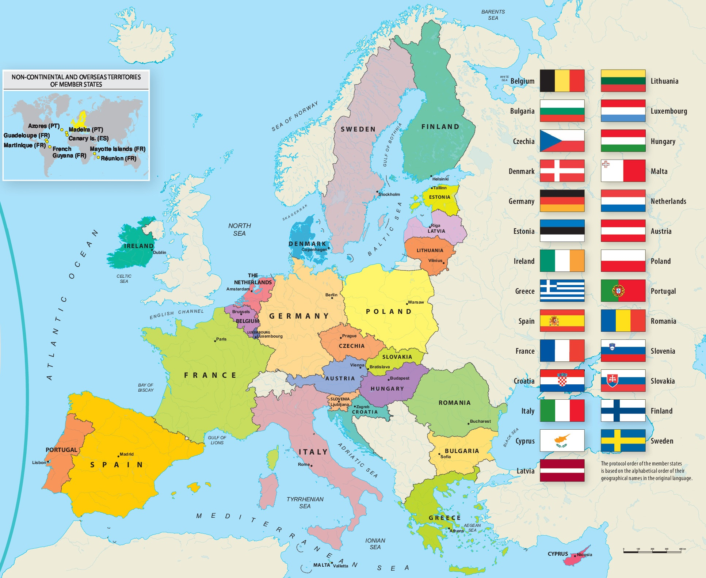
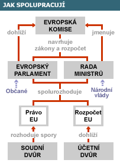
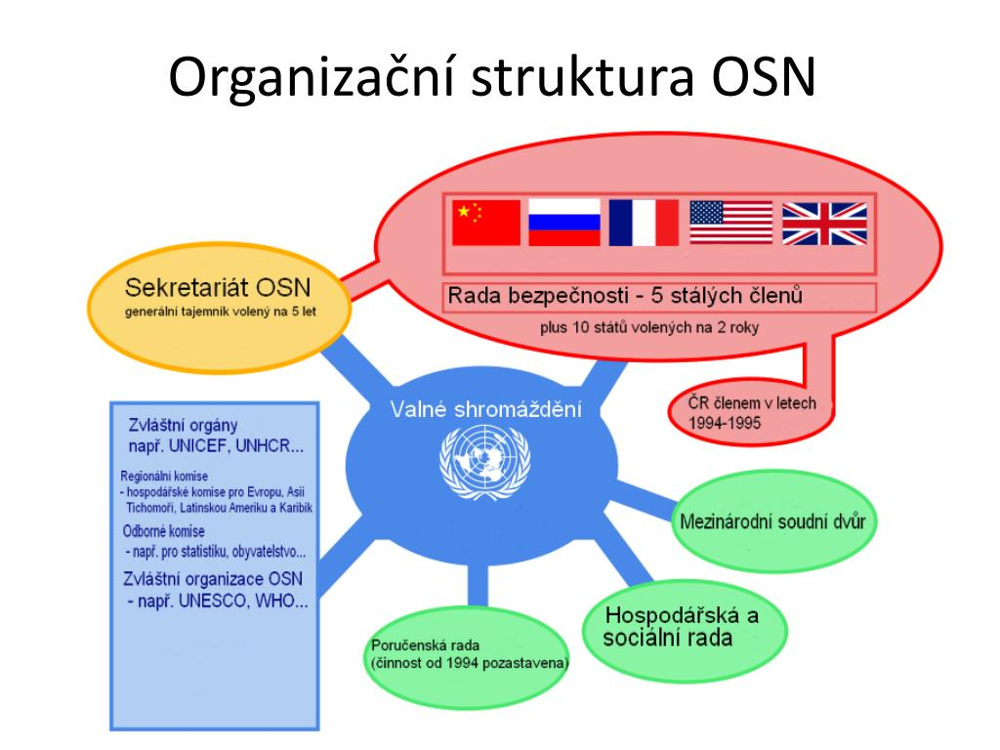
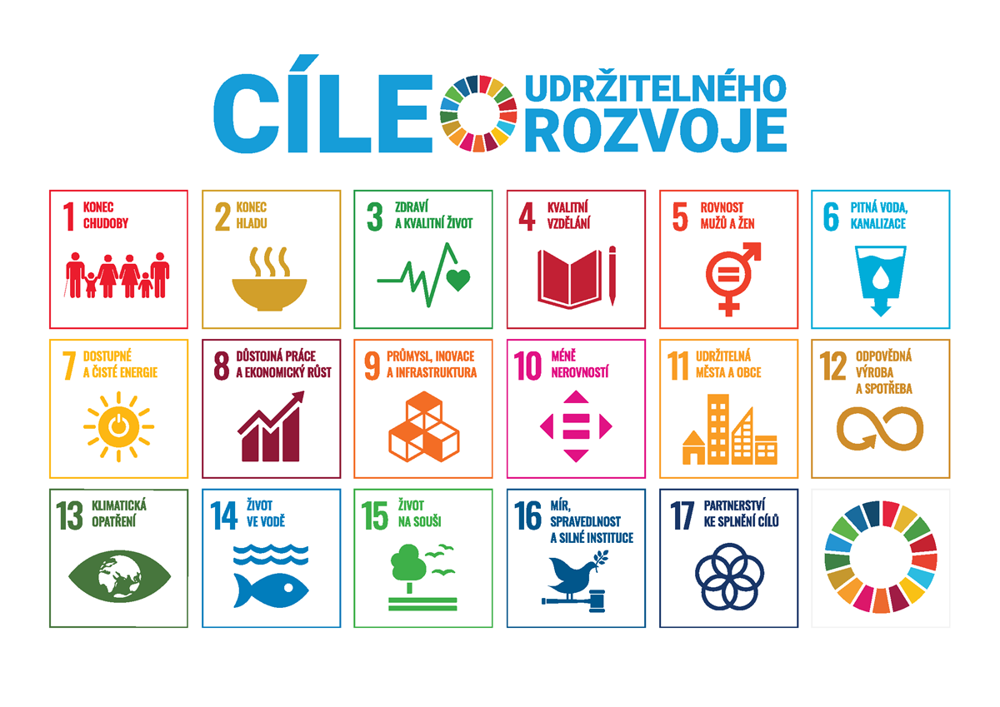

Jedná se o integrační útvar, který slouží k přenesení některých pravomocí suverénních států na společné orgány EU (princip supranacionality). Evropská unie je tvořena 27 státy. Ty usilují o dosažení dlouhodobé bezpečnosti, stability a ekonomické prosperity prostředníctvím hospodářské a politické intergrace členských zemí.
Členskými státy (k roku 2025) jsou Belgie, Bulharsko, Česko, Dánsko, Estonsko, Finsko, Francie, Chorvatsko, Irsko, Itálie, Kypr, Litva, Lotyšsko, Lucembursko, Maďarsko, Malta, Německo, Nizozemsko, Polsko, Portugalsko, Rakousko, Rumunsko, Řecko, Slovensko, Slovinsko, Španělsko, Švédsko

20 z nich je v Eurozóně a používají euro jako svoji měnu: Belgie, Estonsko, Finsko, Francie, Chorvatsko, Irsko, Itálie, Kypr, Litva, Lotyšsko, Lucembursko, Malta, Německo, Nizozemsko, Portugalsko, Rakousko, Řecko, Slovensko, Slovinsko, Španělsko
Před WWII - Panevropské hnutí (Richard Coudenhove-Kalergi) -> první snaha o vytvoření integrovaného evropského společenství; idea zrušena kvůli hospodářské krizi a druhé světové válce
1951 - Pařížská smlouva - smlouva zakládající Evropské společenství uhlí a oceli (ESUO). První skutečný předchůdce Evropské unie, hlavní cíl bylo integrovat uhelný průmysl. Zasloužil se o ni Rober Šuman (první předseda Evropského parlamentu). Zakládajícími státy byli Benelux, Francie, Německo, Itálie.
1957 - Římské smlouvy - dvě smlouvy Evropské hospodářské společenství (EHS) (snaha vytvořit celní unii, společný trh a volný pohyb kapitálu) a Evropské společenství pro atomovou energii (EUROATOM) (snaha o kontrolu jaderného programu)
1965 - Slučovací smlouva - zřízení společné rady, komise evropských společenství. A sloučila jiná společenství - ESUO, EHS, EUROATOM. Evropské společenství - ES
1986 - Jednotný evropský akt (JEA) - reformní kroky k budování jednotného vnitřního trhu (odstraněna kontrola osob a zboží na vnitřních hranicích). A převedení některých suverénních kompetencí na společné orgány. Důležitý byl Jacques Delors.
1992 - Smlouva o Evropské unii (Maastrichtská smlouva) - vznik Evropské unie - hospodářská a měnová unie, rozšíření aktivit na úrovni politické úrovně. Všechny integrační aktivity se rozdělili do tří oblastí.
1999 - Amsterdamská smlouva - přinesla užší spolupráci v oblasti vnitra a justice, také změnila systém obsazování míst v Evropské komisi. EU také začleňovala Schengenskou smlouvu (Schengenský prostor).
2001 - Niceská smlouva - rozšířila systém hlasování kvalifikovanou většinou na úkor principu jednomyslnosti do více oblastí. Princip trojité většiny.
2007 - Lisabonská smlouva - novelizuje již platné smlouvy a a nahrazuje Evropská společenství Evropskou unií. EU tím získává právní subjektivitu.
2020 - Brexit - referendum (2016) ve Velké Británii odhlasovalo, že VB opustí EU, stále ale platí vzájemné vztahy mezi VB a EU.
Žádost o členství v EU předložil Václav klaus v roce 1996 a o rok později Česko získalo status kandidátské země. Po skončení referenda (2004) ve prospěch vstupu byla Česká republika konečně součástí EU.
Instituce EU mají za úkol spravovat a řídit evropský projekt.

Evropský parlament je jedním z dvou zákonodárných orgánů EU (spolu s radou EU). Jeho hlavní funkcí je schvalovat legislativní návrhy a dohlížet na činnost dalších institucí. Evropský parlament má 720 poslanců, volených občany jednotlivých států (5 let). Poslanci spolu tvoří frakce (kluby), nejsou rozděleni podle národnosti. Předsedkyní je Roberta Metsolová. Evropský parlament zasedá v Bruselu, Štrasburgu a Lucemburku.
Rada EU je druhým zákonodárým orgánem a zastupuje vlády členských států. Společne s Evropským parlamentem schvaluje legislativu a určuje politický směr EU. Vznik Rady EU byl krokem k posílení spolupráce mezi členskími státy a vedením EU. Rozšíření hlasovacího systému na základě většiny kvalifikovaného hlasování bylo důležitým krokem k efektivnějšímu rozhodování a tomu, aby velké státy nemohly přehlasovat malé. Předseda se střídá po 6 měsících.
Evropská rada je složena z hlav států nebo vlád členských států EU (prezident, předseda vlády, kancléř…), spolu s předsedou Evropské komise a předsedou Evropské rady. Jeji složení je tedy výhradně politické a zahrnuje nejvyšší úroveň vedení členských států. Evropská rada nemá na rozdíl od Rady EU pravomoc přijímat legislativu. Rada se setkává pravidelně (obvykle čtyřikrát ročně) a diskutuje o klíčových otázkách týkajících se budoucnosti EU.
Pozor! Existuje ještě Rada Evropy, ale ta není součástí institucí EU. Zabývá se dodržováním lidských práv.
Evropská komise je exekutivní orgán EU, jehož úkolem je navrhovat legislativu a implementovat rozhodnutí. Také dohlíží na dodržování práva EU. Předsedkyní EU je Ursula von der Leyne. A je volena Evropským parlamentem a Radou EU. Za Česko je to Jozef Síkela.
Kontroluje právo v EU a určuje výklad právních předpisů.
Kontroluje finance v EU
Jako reakci na rozdělení světa na dva tábory - demokratické instituce a autokrativní vládnutí, stejně tak jako na konec 2. světové války začali demokratické státy Evropy a Severní Ameriky hledat společné řešení. Marshallův plán pomohl Evropě rozběhnout ekonomiku. A západoevropské státy se dohodly na bezpečnostní spolupráci v roce 1948, když podepsali Bruselský pakt - VB, Francie, Benelux (Belgie, Nizozemsko, Lucembursko). Posléze se k nim přidali USA a Kanada, a tak 4. dubna roku 1949 ve Washingtonu, D.C., dali vzniknout Severoatlantské alianci (NATO). Zakládajícími členy byly USA, Kanada, Spojené Království, Francie, Belgie, Nizizemsk, Lucembursko, Protugalsko, Itálie, Dánsko, Norsko a Island.
Členské státy se zavázali plnit několik podmínek, které jsou stanoveny v 14 článcích. Nejdůležitější z nich je prvních 5.
OSN existuje, aby přivedla všechny národy světa ke společnému zajištění míru a rozvoje založeného na spravedlnosti, lidské důstojnosti a života ve kvalitních podmínkách. Poskytuje zemím příležitost vyvážit globální vzájemnou závislost zemí a jejich národní zájmy při řešení mezinárodních problémů.
Součástí OSN je v dnešní době 193 členských států
Lidská práva jsou práva, která patří lidským bytostem jen proto, že jsou to lidské bytosti.
Základní lidská prava slouží k uspokojeni základních lidských potřeb každého člověka - jídlo a pití, bezpečí, soukromí, svoboda, vzdělání, práce, rovnost

Valné shromáždění - zástupci všech členských států
Rada bezpečnosti - zástupci 15 členských států (5 stálých s právem veta a 10 volených Valným shromážděním). Má oprávnění vyslat mírové vojenské jednotky
Ekonomická a sociální rada
Mezinárodní soudní dvůr
Sekretariát
Poručenská rada

UNICEF, WHO, UNESCO…